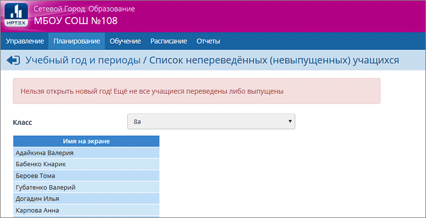

Как найти учащихся, для которых не создан приказ о переводе или выпуске?

Сообщение "Ещё не все учащиеся переведены либо выпущены" говорит о том, что не все учащиеся охвачены документами о движении.
Перейдите в текущий (старый) учебный год. В разделе "Движение учащихся" нужно очень внимательно последовательно открыть все документы о переводе (обязательно! проверить документы с подтипами "обычный", "завершение программы (после экзамена)", "условный перевод/выпуск", "прикрепленные к ОО"), а также о выпускниках.
Для каждого подтипа, последовательно открывайте каждый документ и нажимайте кнопку "Добавить". Если все документы созданы, будет выдано соответствующее сообщение. Если кто-то из учащихся забыт, система выдаст список учащихся, доступных для добавления в приказ.